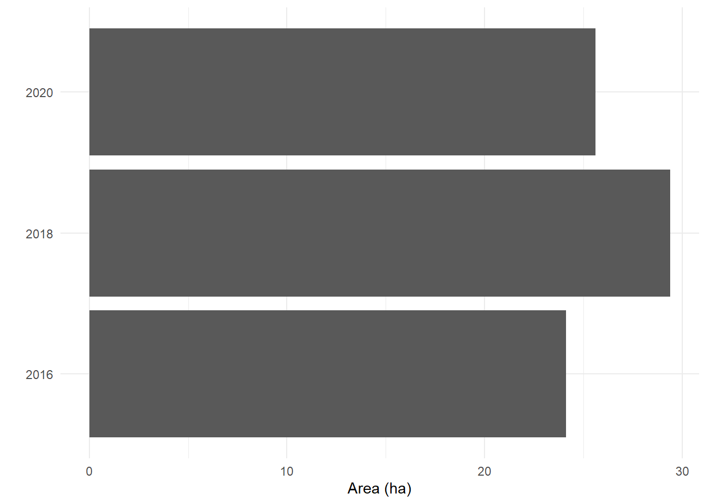

library(archive)
library(sf)
library(dplyr)
library(ggplot2)
library(units)
library(unglue)When working with spatial data, one thing I’ve noticed is: there’s a lot of obscure data formats. And with every one of them, it takes me a while to figure out how to handle them in R. So I decided to make a series of blog posts on how to handle some of the spatial formats I’ve come across.
This post is on .kmz files. If you’re working with Google Earth Pro, this is the format your vector files will be exported in. Recently, I’ve worked quite a bit with Google Earth Pro to collect data on landfills by hand. You’ll find an example .kmz file here.
TL;DR
For a .kmz file, follow these steps:
- Unzip the
.kmz, e.g. usingarchive::archive_extract - Read in the resulting
.kmlfile usingsforterra - Make sure you only have the geometry type you want – (multi)polygons.
Setup
Let’s start by loading the necessary libraries. We’ll need archive to unpack our .kmz file. With sf, we can then read the corresponding file in. dplyr will help us wrangle the data once they’re read in. With ggplot2, we can visualize our data. units helps wrangling with different area units. unglue is a package that helps us extract information from strings.
Now, let’s download our file. For this, we use the URL I’ve mentioned before. Also, we’re creating a temporary file into which we load this file – kmz_path. Watch out, though: it’s a binary file, so we need to add the corresponding argument to the function download.file.
kmz_url <- "https://github.com/sarahzeller/sarahzeller.github.io/blob/main/assets/Agbogbloshie.kmz"
kmz_path <- tempfile(fileext = ".kmz")
download.file(
url = kmz_url,
destfile = kmz_path,
# it's a binary file
mode = "wb")Unzipping the .kmz to .kml
The first step is to unzip our .kmz, which hides .kml files underneath. In our simple case, it’s just a single .kml file. We can use the archive_extract command for this. I’m using temp files here, but feel free to exchange them for your own file paths. In the end, we’re checking out everything that was zipped up. In this case, it’s just a single file: doc.kml.
kml_path <- tempfile()
archive_extract(archive = kmz_path,
dir = kml_path)
# check out the contents
kml_path |> list.files()[1] "doc.kml"Read in the .kml file
Now that we’ve gotten to our .kml file, let’s read it into R. Since this is not raster, but vector data, we’re using the library sf for this task. We’re working with a temp file, so we need the list.files function to find out exactly where the file is that we’re interested in.
Now that we’ve read it in, we can see that there are two different types of geometries in this file:
- point geometry (row 1)
- multypolygon geometries (row 2–3)
agbogbloshie <- kml_path |>
list.files(full.names = TRUE) |>
read_sf()
agbogbloshie |> head()Simple feature collection with 6 features and 2 fields
Geometry type: GEOMETRY
Dimension: XYZ
Bounding box: xmin: -0.2311228 ymin: 5.54208 xmax: -0.2246721 ymax: 5.556922
z_range: zmin: 0 zmax: 0
Geodetic CRS: WGS 84
# A tibble: 6 × 3
Name Description geometry
<chr> <chr> <GEOMETRY [°]>
1 Agbogbloshie "" POINT Z (-0.2264589 5.548876 0)
2 Agbogbloshie_02_2020 "" MULTIPOLYGON Z (((-0.2311228 5.554326 0, …
3 Agbogbloshie_10_2018 "" MULTIPOLYGON Z (((-0.2304394 5.552348 0, …
4 Agblogbloshie 10_2016 "" MULTIPOLYGON Z (((-0.2292498 5.550126 0, …
5 Agbogbloshie_10_2018_02 "" MULTIPOLYGON Z (((-0.229426 5.553367 0, -…
6 Agbogbloshie_10_2018_03 "" MULTIPOLYGON Z (((-0.2264083 5.550984 0, …Sorting the .kml content
We’ve seen that there’s two different types of geometries in this .kml file. Let’s unpack these into two objects. To do this, we use the geometry types of each row, and simply filter for points and multipolygons.
agbogbloshie_point <- agbogbloshie |>
filter(st_geometry_type(geometry) == "POINT")
agbogbloshie_polygon <- agbogbloshie |>
filter(st_geometry_type(geometry) == "MULTIPOLYGON")Manipulating the data
Now that we’ve gotten the data into a format we can work with, let’s add some information. The first thing is to put the information contained in the Name column into a readable format. Next thing, we want to compute the area of our polygons.
Extracting information from the Name
When we check out our agbogbloshie_polygon data frame, we can see that there’s information contained in the Name column, specifically: the year for which the polygon shape is valid. So let’s extract that numeric information from the character column! Because the description is quite long and has much information included – and it’s always formatted the same way –, we’ll use the unglue package to extract the information. Also, the landfill is misspelt in some cases, so we need to account for that.
agbogbloshie_polygon <- agbogbloshie_polygon |>
unglue_unnest(Name,
patterns = c("{landfill_name}_{month}_{year}_{polygon_no}",
"{landfill_name}_{month}_{year}",
"{landfill_name} {month}_{year}"),
remove = FALSE) |>
mutate(landfill_name = case_match(landfill_name,
"Agblogbloshie" ~ "Agbogbloshie",
"Agbogbgloshie" ~ "Agbogbloshie",
.default = "Agbogbloshie"))
agbogbloshie_polygonSimple feature collection with 8 features and 6 fields
Geometry type: MULTIPOLYGON
Dimension: XYZ
Bounding box: xmin: -0.2311228 ymin: 5.54208 xmax: -0.2246721 ymax: 5.556922
z_range: zmin: 0 zmax: 0
Geodetic CRS: WGS 84
# A tibble: 8 × 7
Name Description landfill_name month year polygon_no
* <chr> <chr> <chr> <chr> <chr> <chr>
1 Agbogbloshie_02_2020 "" Agbogbloshie 02 2020 <NA>
2 Agbogbloshie_10_2018 "" Agbogbloshie 10 2018 <NA>
3 Agblogbloshie 10_2016 "" Agbogbloshie 10 2016 <NA>
4 Agbogbloshie_10_2018_02 "" Agbogbloshie 10 2018 02
5 Agbogbloshie_10_2018_03 "" Agbogbloshie 10 2018 03
6 Agbogbgloshie_02_2020_02 "" Agbogbloshie 02 2020 02
7 Agbogbloshie_02_2020_03 "" Agbogbloshie 02 2020 03
8 Agbogbloshie_10_2016_02 "" Agbogbloshie 10 2016 02
# ℹ 1 more variable: geometry <MULTIPOLYGON [°]>Let’s use this information to plot the landfill in the two different years! Seems like the landfill grew quite a bit in between.
ggplot() +
geom_sf(data = agbogbloshie_polygon) +
facet_wrap(~year) +
geom_sf(data = agbogbloshie_point) +
theme_void() +
ggspatial::annotation_scale()This looks good! However, we can see that the landfills consist of multiple polygons. Let’s get them together.
Summarizing into one polygon
In every year, we have more than one polygon. We want to collapse these into a single multipolygon. For that, we need to summarize them by year and landfill.
agbogbloshie_polygon <- agbogbloshie_polygon |>
st_zm() |>
st_transform(crs = "ESRI:54009") |>
st_make_valid() |>
# summarize geometry into multipolygons
group_by(landfill_name, year, month) |>
summarize() |>
ungroup()Calculating area
As a next step, let’s calculate the area of these polygons. After all, it’s interesting to see if this landfill shrinks or grows!
For now, our data are unprojected, though. We can check this by getting the coordinate reference system (CRS) of our data. The output is very long and includes a lot of information, but we only need to focus on the first line, the User input. The next lines show the corresponding well-known text (wkt), which details exactly how the CRS works. We can see here that the CRS is still WGS 84, which means – unprojected.
st_crs(agbogbloshie)Coordinate Reference System:
User input: WGS 84
wkt:
GEOGCRS["WGS 84",
DATUM["World Geodetic System 1984",
ELLIPSOID["WGS 84",6378137,298.257223563,
LENGTHUNIT["metre",1]]],
PRIMEM["Greenwich",0,
ANGLEUNIT["degree",0.0174532925199433]],
CS[ellipsoidal,2],
AXIS["geodetic latitude (Lat)",north,
ORDER[1],
ANGLEUNIT["degree",0.0174532925199433]],
AXIS["geodetic longitude (Lon)",east,
ORDER[2],
ANGLEUNIT["degree",0.0174532925199433]],
ID["EPSG",4326]]However, we know that the world is shaped like a potato, and that these unprojected data are biased. To correct for this, we first need to project the data into a CRS that’s accurate for that world region when it comes to area – we also call this area-preserving projection. The official CRS for Ghana, where this landfill is located, has the EPSG code 2136. Once we’ve projected the polygons, we can easily calculate the area with the sf package.
agbogbloshie_polygon <- agbogbloshie_polygon |>
st_transform(crs = "epsg:2136") |>
mutate(area = st_area(geometry))
agbogbloshie_polygonSimple feature collection with 3 features and 4 fields
Geometry type: MULTIPOLYGON
Dimension: XY
Bounding box: xmin: 1179342 ymin: 316685.8 xmax: 1181692 ymax: 322068
Projected CRS: Accra / Ghana National Grid
# A tibble: 3 × 5
landfill_name year month geometry area
* <chr> <chr> <chr> <MULTIPOLYGON> [m^2]
1 Agbogbloshie 2016 10 (((1180085 320017.8, 1180468 319802.8, 11805… 2.41e5
2 Agbogbloshie 2018 10 (((1180357 319898.9, 1180372 319891.8, 11803… 2.94e5
3 Agbogbloshie 2020 02 (((1179921 320055.5, 1179936 320041.3, 11799… 2.56e5You’ll notice that the area column has a specific format: it’s a unit. This package makes it easy to convert values from one unit into another. Let’s see how we can convert the area into hectares. Afterwards, let’s drop the unit because we have the data in the final shape we want them.
agbogbloshie_polygon <- agbogbloshie_polygon |>
mutate(area_ha = set_units(area, "ha") |> drop_units())And there we have it, a data frame with the attributes that we need! Let’s check out the area in comparison. We see that there’s not that much difference!
ggplot(data = agbogbloshie_polygon) +
geom_col(aes(x = year |> as.character(), y = area_ha)) +
coord_flip() +
labs(y = "Area (ha)",
x = "") +
theme_minimal()

Alternative using terra
If you prefer working with terra, e.g. because you need to combine your polygon data with raster data, you can of course also read in the .kml data. Since this is not the focus of this post, here’s a quick walk-through.
Note
vect just drops the point geometry.
library(terra)
library(tidyterra)
library(tidyverse)
agbogbloshie_terra <- kml_path |>
# select first file there
list.files(full.names = TRUE) |>
pluck(1) |>
# read in with terra
vect() |>
project("epsg:2136") %>%
# expanse is an odd function where we need to input the above again, that's
# why I added the tidyverse pipe and the dot.
mutate(area = expanse(., unit = "ha"))Lastly, let’s account for the misspelt names in the landfill_name column. Also, let’s sum the area per year.
agbogbloshie_terra_clean <- agbogbloshie_terra |>
as.data.frame() |>
unglue_unnest(Name,
patterns = c("{landfill_name}_{month}_{year}_{polygon_no}",
"{landfill_name}_{month}_{year}",
"{landfill_name} {month}_{year}"),
remove = FALSE) |>
mutate(landfill_name = case_match(landfill_name,
"Agblogbloshie" ~ "Agbogbloshie",
"Agbogbgloshie" ~ "Agbogbloshie",
.default = "Agbogbloshie")) |>
group_by(landfill_name, year) |>
summarize(area_ha = sum(area)) |>
ungroup()Citation
BibTeX citation:
@online{zeller2024,
author = {Zeller, Sarah},
title = {Opening `.kmz` Files},
date = {2024-05-27},
url = {https://sarahzeller.github.io/blog/posts/opening-kmz-files/},
langid = {en}
}
For attribution, please cite this work as:
Zeller, Sarah. 2024. “Opening `.kmz` Files.” May 27, 2024.
https://sarahzeller.github.io/blog/posts/opening-kmz-files/.